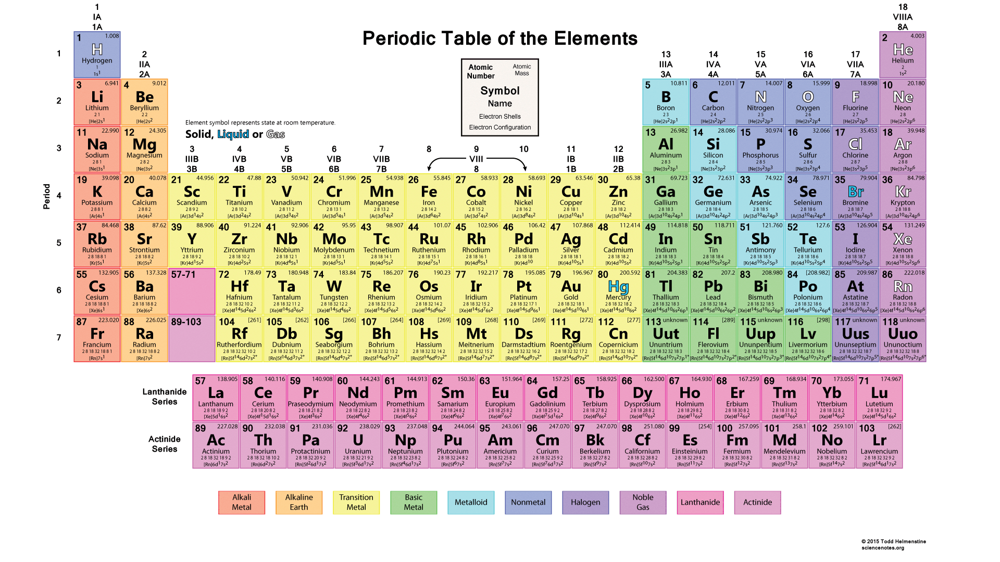
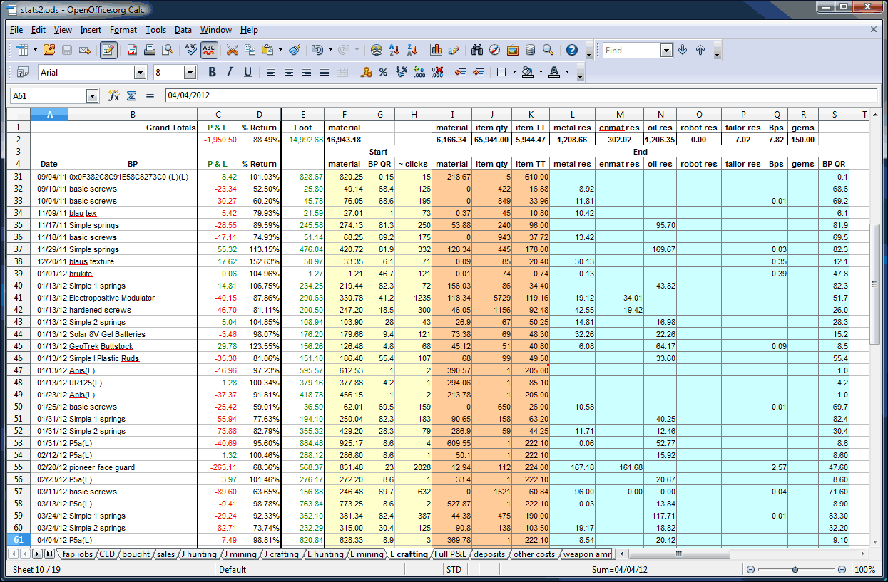

| Name | Surname | Favourite Sauce | Hometown |
|---|---|---|---|
| Luphumzo | Mtukuse | white sauce | East London |
| Nkosilathi | Tauro | BBQ Sauce | California |
| Chad | Wyndgaard | Peri-naise | Madrid | Nelisa | Bani | Sweet chilli | Cape town |
| Aqhamile | Cimani | BBQ | Ngcobo |
| Alexander | Fortuin | Tomato sauce | Cape town |
| Muneer | Carolus | chilli | Cape town |
| Ryan | Thomas | Sweet-honey | Cape town |
| Malcolm | Johnson | Peri-naise | Gugulethu |
| Zadabibi | Armien | Mayo | Rondebosch |
| Brandon | Brevis | Marmite | Khayelitsha |
| Ilyaaz | Isaacs | Chilli | Handover Park |
| Jemone | Williams | Dip | Japan |
| Zoe | Thomas | Mustard | Yasemite |
| Sheldon | Orgill | Peri peri | Jamaicai |
The periodic table is a tabular arrangement of the chemical elements, ordered by their atomic number, electron configuration, and recurring chemical properties, whose adopted structure shows periodic trends. Generally, within one row (period) the elements are metals on the left, and non-metals on the right, with the elements having similar chemical behaviours being placed in the same column. Table rows are commonly called periods and columns are called groups. Six groups have accepted names as well as assigned numbers: for example, group 17 elements are halogens; and group 18 are noble gases. Also displayed are four simple rectangular areas or blocks associated with the filling of different atomic orbitals.
an electronic document in which data is arranged in the rows and columns of a grid and can be manipulated and used in calculations
Logical truth is one of the most fundamental concepts in logic, and there are different theories on its nature. A logical truth is a statement which is true, and remains true under all reinterpretations of its components other than its logical constants. It is a type of analytic statement. All of philosophical logic can be thought of as providing accounts of the nature of logical truth, as well as logical consequence.[1] Logical truths (including tautologies) are truths which are considered to be necessarily true. This is to say that they are considered to be such that they could not be untrue and no situation could arise which would cause us to reject a logical truth. It must be true in every sense of intuition, practices, and bodies of beliefs. However, it is not universally agreed that there are any statements which are necessarily true.
Mathematical tables are lists of numbers showing the results of calculation with varying arguments, before calculators were cheap and plentiful, people would use such tables to simplify and drastically speed up computation. Tables of logarithms and trigonometric functions were common in math and science textbooks. Specialized tables were published for applications such as astronomy, celestial navigation and statistics.